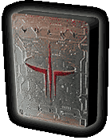

| Minimum System Requirements | |
| Linux Kernel | 2.2.9 or higher |
| GNU C Libraries (glibc) | 2.0 or 2.1 |
| Processor/Video |
Pentium 233 MHZ with 8 MB video card*, or Pentium II 266 MHz with 4 MB video card*, or AMD K6-350 MHZ with 4 MB video card* |
| CD-ROM | 4x CD-ROM drive (600 KB/s sustained transfer rate) |
| RAM | 64 MB |
| Sound | OSS compatible sound card |
| Hard disk | Minimum 20 MB free space; 480 MB if you do not want to use the live filesystem from the CD |
| Multiplayer requirements | Internet and LAN (TCP/IP) play supported; Internet play requires a 28.8 Kbps (or faster) modem |
| * Notes: Quake III Arena uses the OpenGL® API for 3-D hardware acceleration. Currently, 3dfx Voodoo cards and Matrox G200/G400 are supported. For more information on these and other cards see our GL Drivers support page. Software rendering is not supported. | |